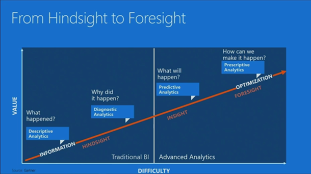
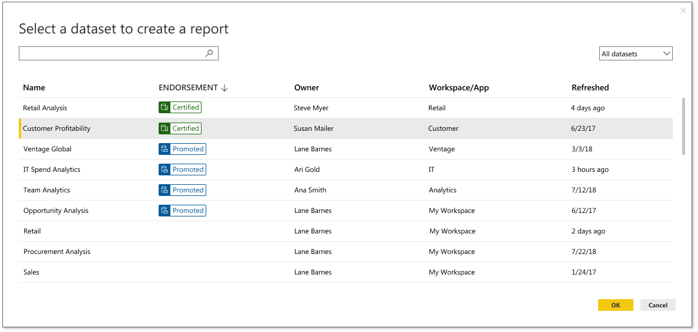

Nos services
Premium Analytique offre une vaste gamme de services liés à Power BI. Quels que soient vos besoins et le niveau de maturité de vos systèmes, leurs experts réaliseront vos projets à l'aide de solutions robustes et créatives.

Cesser d'impacter vos applications opérationnelles grâce à Dataflows
Les systèmes opérationnels peuvent être gravement ralentis, voir arrêtés, par des requêtes Power BI lourdes et redondantes.
Dataflow permet d'éviter cette pression inutile sur les systèmes en minimisant le nombre de requête ou encore en ajoutant les données du jours aux données historiques (rafraîchissement incrémentiel).

Augmenter l'impact de vos rapports en utilisant l'intelligence artificielle
Le réflexe naturel consiste généralement à créer en comprenant bien les besoins.
Power BI propose des visuels dynamiques et utilisant l'intelligence artificielle qui permettent d'analyser les données

Utilisez un seul modèle de données certifiés pour tous vos rapports
Un Power BI libre-service permet souvent à chaque utilisateur de recréer leurs modélisations et de réinterpréter les données. Le temps de développement est ainsi allongé et les réponses divergent.
Un libre-service efficace ne requiert qu'un seul modèle de données certifiés. Chaque utilisateur s'y connecte pour créer leurs rapports, ce qui élimine beaucoup de développement et permet de s'assurer une seule interprétation des données.
L'utilisation de la sécurité au niveau de la ligne (Row Level Security) permet de s'assurer de la sécurité de l'information.

Standardiser vos définitions à l'aide du Common Data Model
L'information est nommé différemment selon le système source. Le Common Data Model de Microsoft est un lexique qui permet de standardiser les noms d'après les meilleures pratiques. Utiliser le Common Data Service réduit la confusion, facilite le développement et surtout facilite l'utilisation de nos modèles de rapports. Des outils tel le Power BI Helper permettent de documenter le modèle facilement.

Améliorez la performance de vos rapports avec de hauts standards de modélisation et de code DAX.
Une mauvaise modélisation des données et du code mal choisi, souvent calqué sur Excel, est la cause principale de lenteur des rapports.
Premium Analytique propose de hauts standards de modélisation et de codage. La première étape consiste à mettre le code au bon endroit (SQL, M ou DAX) puis d'utiliser le code sophistiqués qui a été créé à cet effet.
Premium Analytique est partenaire avec Entreprise DNA pour la formation de ses employés.

Clarifiez la gouvernance de vos données
Sans gouvernance claire, l'augmentation du nombre d'utilisateurs et de rapports peut nuire à l'expérience utilisateur et à l'impact des rapports.
Premium Analytique peut vous aider à déterminer les rôles et responsabilités ainsi que de paramétrer la sécurité et les espaces de travail selon le cycle de développement de chaque rapport.